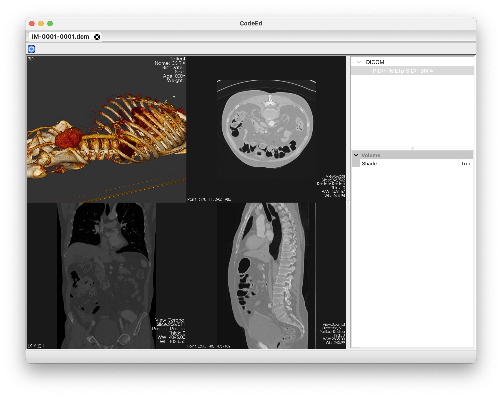

CodeEd CodeEd
CodeEd CodeEd
It is an IDE designed for developing applications and units in C/C++ environments. It is being developed from 2020, taking as an example of low power consumption and simple use.
B.Firat.OZDEMIR
Software EngineerI am actively using it in many projects.
The CodeEd application provides a number of features in the C/C++ environment.
Detailed Description Code completion involves taking an (incomplete) source file, along with knowledge of where the user is actively editing that file, and suggesting syntactically- and semantically-valid constructs that the user might want to use at that particular point in the source code.
It ensures that the functions in the source files in the project are called correctly and the default arguments are displayed.
It notifies the software developer of errors or warnings that may be made during operation. It can be displayed as a list with the diagnosis panel. This feature can be changed in the application settings.
 |
 |
 |
|---|---|---|
A build database holds all the information used to compile files in a project. For each file in the database, the working directory or the command line used for the compiler call can be queried. It allows transforming the source files in the project. It ensures that the equipment works correctly on the project.
By serializing the system files associated with your projects, it enables the source files to be translated more quickly. You need to add the Precompiled header file in your project and activate the application settings. It re-serializes the precompiled header file every time it is changed.
The project navigates the source files found and stores the found classes and functions in a database environment. this storage data is used by spotlight dialog and new function declaration. The source code you are working on is check again during document save. This check again during document save provide at new function declare. It can be changed in the application settings dialog.
It creates a database by collecting all the collections on the project. Allows you to search for functions, classes, and files while running.
 |
 |
|---|---|
Code-formatter is a tool that automatically formats C/C++ code so developers don't have to worry about style issues during code reviews. It is highly recommended that you format your modified C++ code before opening pull requests, this will save you and your reviewers time. The CodeEd implementation uses the clang-formatter API. There are certain formats in the settings dialog or a custom format can be created by reading the '.clang-format' file within the project.
In general, a debugger is a computer program that helps test and debug other programs. LLDB and GDB are two debuggers. CodeEd includes LLDB API.

It offers some of the capabilities that this debugger will give you over trace messages in the code:
| Breakpoints | Call Stack | Watch |
|---|---|---|
 |
 |
 |
It allows you to test the project you are working on after it is compiled. This test process is provided by the user specifying the configuration. With the configuration arguments and macro the specified target remains the same even when the file is moved.
| Process Panel | Config Dialog | Macro Panel |
|---|---|---|
 |
 |
 |
application development and user-friendly form desktop design support. It uses the wxWidgets environment.
| Resource Edit | Design Edit |
|---|---|
 |
 |
Ancillary equipment for developing code in Javascript and Python projects.
| Javascript | Python |
|---|---|
 |
 |
 |
 |
It allows you to compile in a multi-platform environment with CMake support.

Markdown format support for documentation in your project.

 |
||
|---|---|---|
|  |  |
 |
© 2021. B. Firat OZDEMIR. All rights reserved.